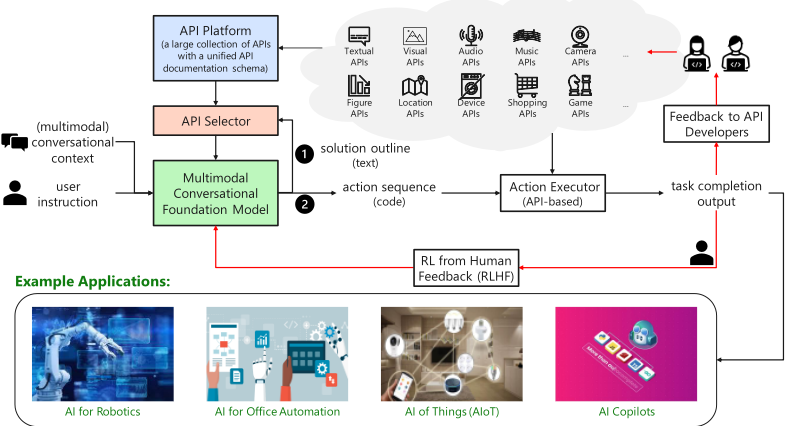
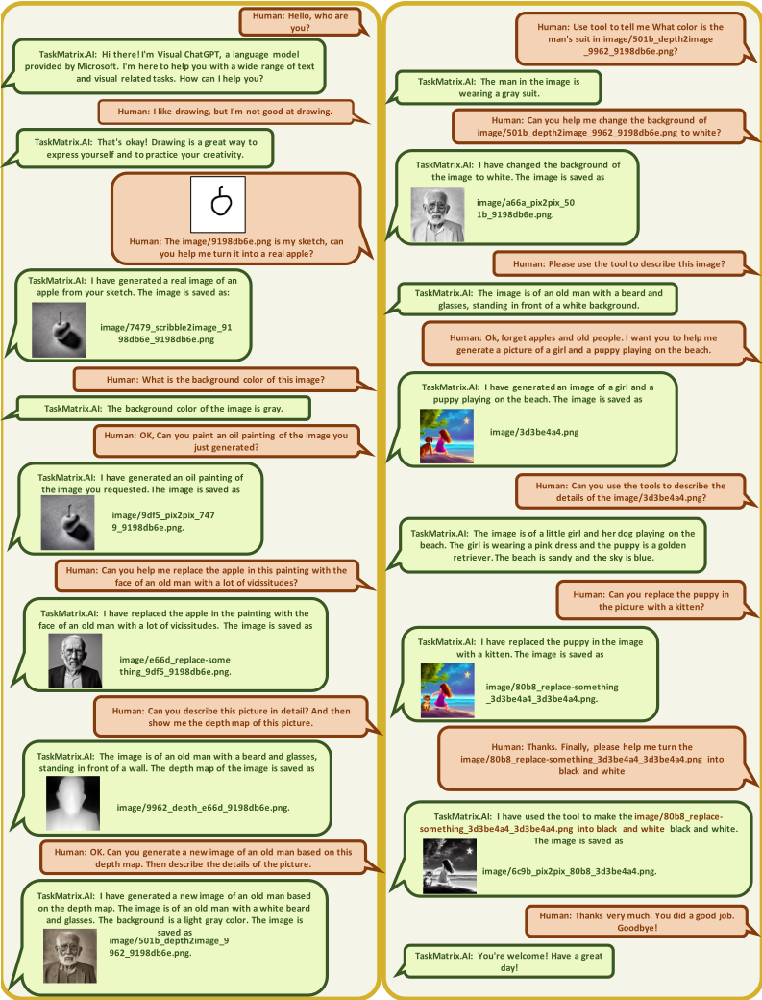
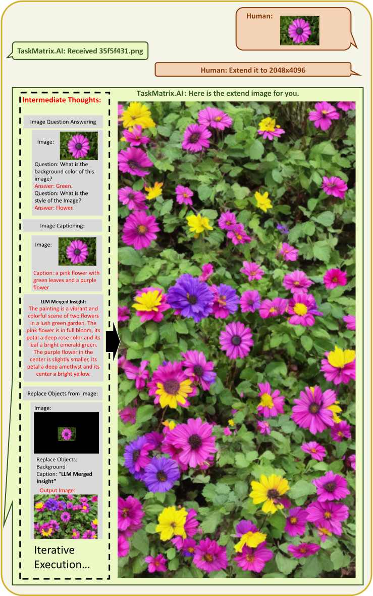
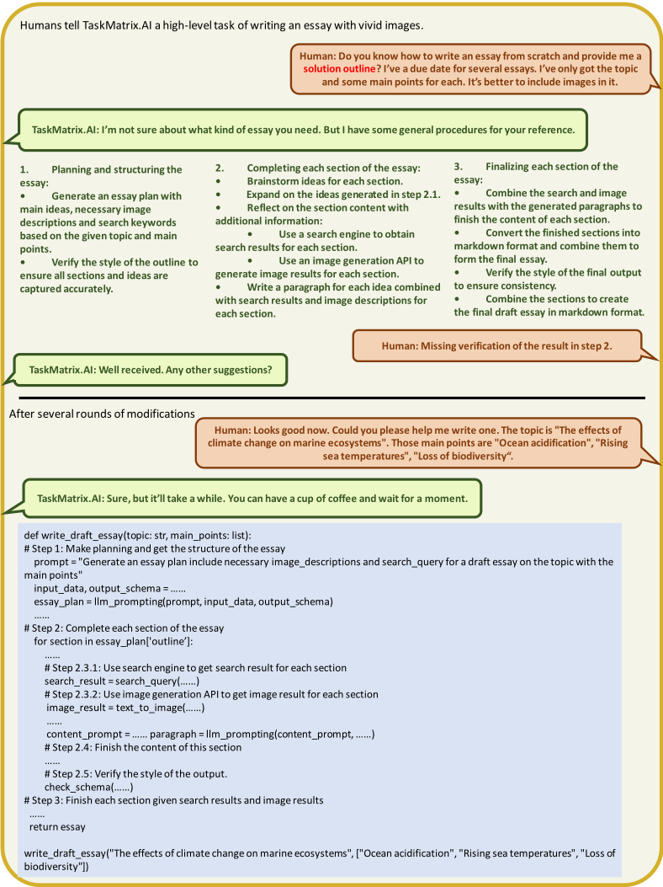
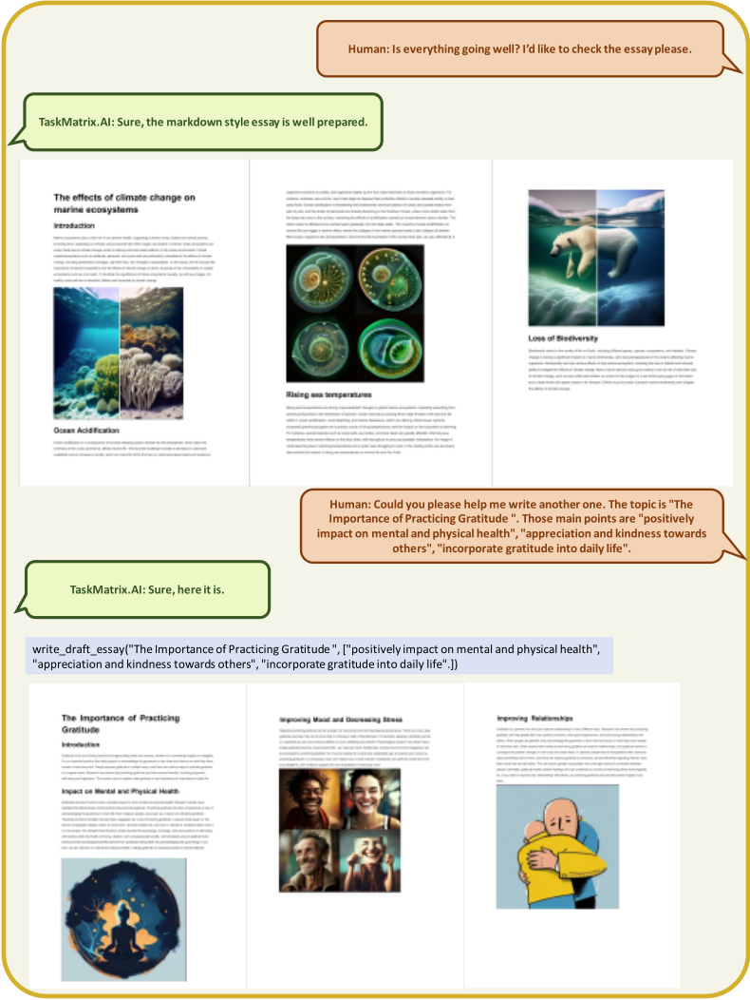
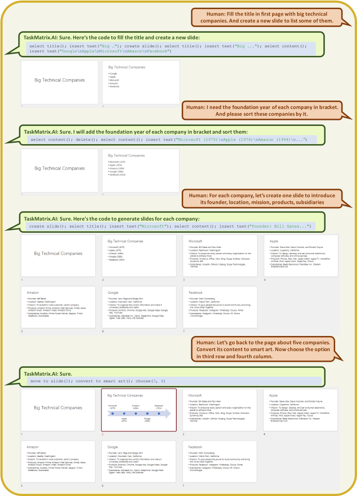
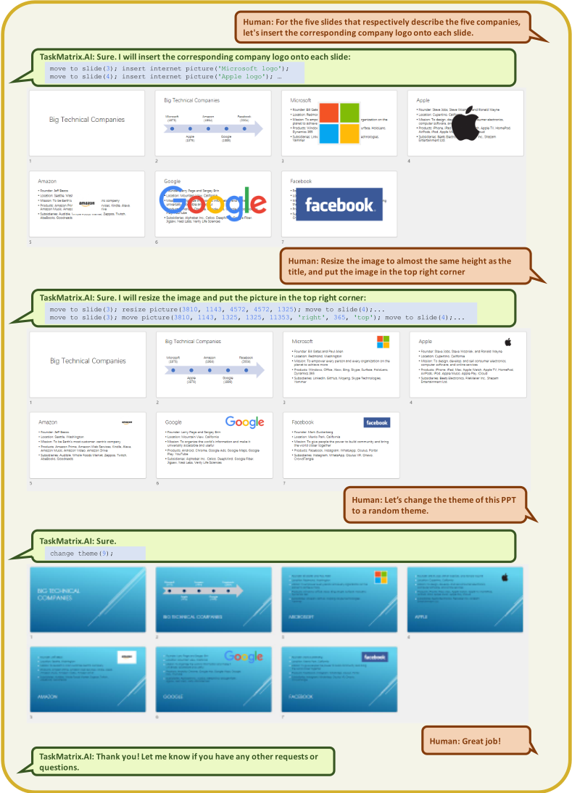
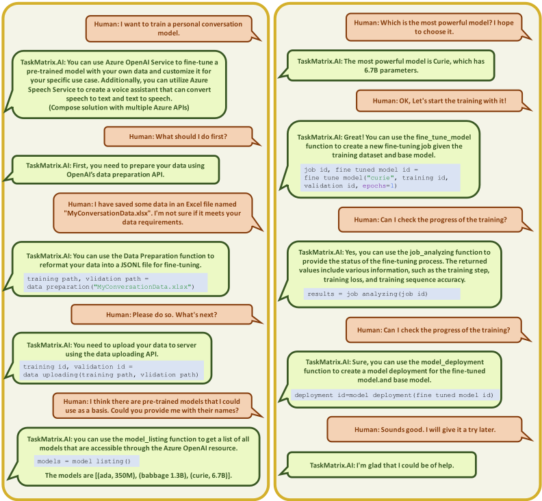
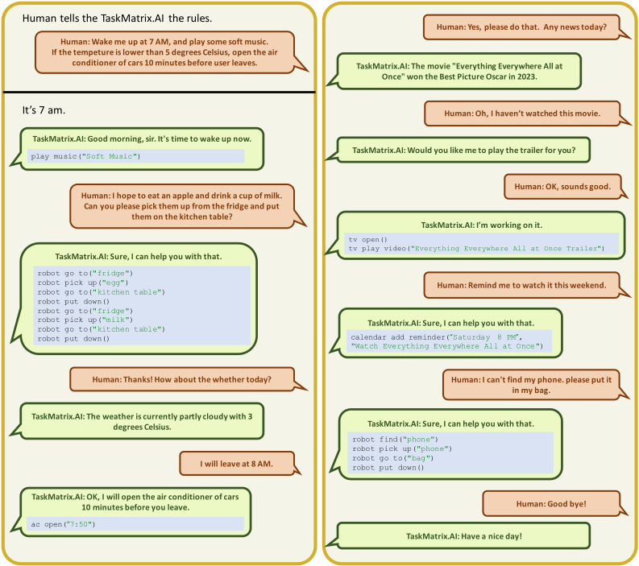
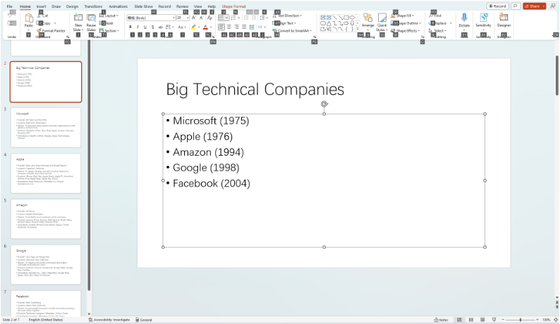

TaskMatrix.AI：通过连接基础模型与数百万个 API 来完成任务
这篇 position paper 针对：ChatGPT/GPT-4 等基础模型擅长开放域对话与代码生成，但在需要领域知识或精确执行的专业任务上表现不足，而现有领域专用模型与系统又难以被基础模型直接调用。方法上提出 TaskMatrix.AI 生态：以多模态对话基础模型（MCFM）为大脑，先生成自然语言 solution outline 再生成可执行 action code，配合统一五段式文档规范的 API Platform、基于语义检索的 API Selector 与带验证机制的 API Executor；并用 RLHF 优化模型与选择器，同时把 API 文档当作可学习参数，由 ChatGPT 对比<错误调用, 正确调用>自动总结经验改进文档。PowerPoint 自动化案例中一条复杂指令被分解为约 25 次 API 调用完成，消融实验证明文档中的 composition instructions 对调用顺序与输出稳定性至关重要。结论：以自然语言文档为接口连接海量 API 并形成反馈闭环，可让基础模型完成数字与物理域的多样化任务，但 API 质量、工具选择、安全与个性化仍是待解挑战。
基础模型（如 ChatGPT、GPT-4）在开放域对话、in-context learning 与代码生成上能力强，但在缺乏领域预训练数据或需要精确执行的专业任务上仍有困难；同时大量已有的领域专用模型与系统（符号式或神经式）因实现与工作机制不同，难以被基础模型直接访问与组合。论文要建立一种机制：让基础模型提出任务解决方案大纲，并自动把大纲中的子任务匹配给具备特定功能的现成模型/系统 API 去完成，从而在数字与物理两个域完成多样化任务。
提出 TaskMatrix.AI 生态，含四个核心组件：(1) 多模态对话基础模型 MCFM：理解用户指令与多模态上下文，先生成 solution outline（用户可在对话中交互修改），再基于选中的 API 生成可执行 action code，并要求内置代码验证机制；(2) API Platform：以统一五段式文档规范（API Name、API Parameter、API Description、Usage Example、Composition Instructions）存储并管理海量 API，支持开发者注册/更新/删除；(3) API Selector：基于语义检索与分域 package 策略从百万级 API 中推荐相关 API；(4) API Executor：执行 action code 并通过验证机制确认结果满足人类指令。另设两条反馈回路：RLHF 用人类反馈训练 reward model 优化 MCFM 与 API Selector；把 API 文档视为可学习参数，用 ChatGPT 基于<user instruction, wrong API calls, correct API calls>自动总结使用经验、改进文档。案例实现以 ChatGPT 为 MCFM，用 python-pptx 解析 PPT 结构化内容、PyAutoGUI 模拟鼠标键盘执行 action code。
PowerPoint 自动化案例中，一条复杂指令（为每家公司生成一页介绍）被分解为约 25 次 API 调用完成
图像外绘案例中，通过 Image Question Answering、Image Captioning、Replace Objects from Image 三个 API 按预定义 solution outline 迭代协作，将图像扩展至 2048×4096 分辨率
消融实验：移除全部 composition instructions 后，模型输出变成无换行的长段落，且 insert_text 与 select_title/select_content 的调用顺序不一致；加入后 MCFM 始终先选中文本框再插入文本
反馈实验：将<错误调用, 正确调用>输入 ChatGPT 自动总结 API 使用经验，前两条反馈与人工编写的 composition instructions 高度相关，可直接补充进文档
论文为 position paper，未提供标准基准上的量化评测指标（如准确率、成功率），作者自述 RLHF 因用户反馈不足被推迟到未来工作
与 WebGPT、ReAct、ToolFormer、ART、Visual ChatGPT、MM-REACT 等只聚焦特定领域少数固定 API 的工作不同，本文提出连接百万级 API 的平台化生态。在教模型使用 API 的四种方式中，预训练/微调难以适应 API 更新、in-context learning 无法承载大量 API，本文选择以自然语言 API 文档为接口，配合 RLHF 与'反馈给 API 开发者'的闭环，把文档当作可学习参数，实现基于自然语言的终身学习；并强调 composition instructions 单句即可覆盖多种 API 组合，比 in-context learning 需要多个示例更高效。
相关度级别：high
命中能力域：3.3 Agent 架构与工具使用 | 3.2 提示工程
理由：论文直接命中 3.3 Agent 架构与工具使用：MCFM + API Platform + API Selector + API Executor 构成完整的 Agent loop 与 harness 设计，覆盖工具文档驱动的工具选择、action code 生成、执行验证与动态动作空间等核心问题。同时强命中 3.2 提示工程：统一 API 文档规范本质上是工具调用场景的提示词资产设计，消融实验证明 composition instructions 对调用顺序与稳定性的关键作用，'文档即可学习参数 + ChatGPT 自动总结错误/正确调用差异来改写文档'是提示词自动优化的具体可操作做法。对正在设计 Agent 工具链、工具文档规范与提示词资产管理的团队有直接参考价值；论文未做系统评测，与 3.5 域仅弱相关（仅有验证机制设想与小规模消融）。
建议动作：深入精读并做内部分享
arXiv:2303.16434v1 [cs.AI] 2023年3月29日
Yaobo Liang ∗ , Chenfei Wu ∗ , Ting Song ∗ , Wenshan Wu ∗ , Yan Xia, Yu Liu, Yang Ou, Shuai Lu , Lei Ji , Shaoguang Mao , Yun Wang , Linjun Shou , Ming Gong , Nan Duan † 微软
{yalia, chewu, tsong, wenswu, yanxia, yluiu, yang.ou, shuailu, leiji, shaoguang.mao, wangyun, lisho, migon, nanduan}@microsoft.com
人工智能（AI）近来取得了令人瞩目的进展。一方面，以 ChatGPT 为代表的高级基础模型（foundation models）能够在广泛的开放域任务上提供强大的对话、上下文学习（in-context learning）和代码生成能力。它们还能基于自身习得的常识知识，为领域特定任务生成高层次的解决方案大纲。然而，它们在某些专门化任务上仍然面临困难，原因在于它们在预训练期间缺乏足够的领域特定数据，或者其神经网络计算在那些需要精确执行的任务上经常出现错误。另一方面，也存在许多现有的模型和系统（基于符号的或基于神经网络的），它们能够很好地完成某些领域特定任务。然而，由于实现方式或工作机制的不同，它们不易被访问，也难以与基础模型兼容。因此，显然迫切需要这样一种机制：能够利用基础模型提出任务解决方案大纲，然后自动将大纲中的部分子任务匹配到具有特定功能的现成模型和系统上并加以完成。受此启发，我们提出 TaskMatrix.AI，作为一个将基础模型与数以百万计的应用程序接口（API）连接起来以完成任务的新型 AI 生态系统。与以往大多数旨在改进单一 AI 模型的工作不同，TaskMatrix.AI 更侧重于利用现有的基础模型（作为类脑中枢系统）以及其他 AI 模型和系统的 API（作为子任务求解器），来完成数字领域和物理领域中的多样化任务。作为一篇立场论文（position paper），我们将阐述构建这样一个生态系统的愿景，解释各个关键组件，并通过案例研究来说明这一愿景的可行性以及我们接下来需要解决的主要挑战。
“宇宙中的智能总量每 18 个月就会翻一番。” —— Sam Altman，OpenAI 首席执行官
基础模型（foundation models）在这十年间取得了令人瞩目的进展，从能够处理和理解不同模态数据的理解型模型（如 BERT (Devlin et al., 2018)、ViT (Dosovitskiy et al., 2021)、Whisper (Radford et al., 2022)），到能够生成各种类型的输出以与世界交互的生成式模型（如 GPT-4 (OpenAI, 2023)、GPT-3 (Brown et al., 2020)、Codex (Chen et al., 2021)、DALL·E (Ramesh et al., 2021)）。ChatGPT 令人印象深刻，以至于许多人认为它是通用人工智能（Artificial General Intelligence, AGI）即将到来的标志。然而，基础模型在执行某些专门任务时仍面临局限与挑战，例如进行精确的数学计算，或完成现实世界中既需要文本处理技能又需要视觉处理技能的多步骤任务。与此同时，已有一些模型和系统（基于数学理论、符号规则或神经网络）能够在某些特定领域的任务上表现得非常出色。但由于实现方式或工作机制不同，它们无法被基础模型直接使用或与之兼容。因此，一种能够将基础模型与具有特殊功能的现成模型和系统连接起来、以完成数字世界和物理世界中多样化任务的机制，已成为迫切而明显的需求。
∗ 同等贡献
† 通讯作者
受此启发，我们提出了构建一个名为 TaskMatrix.AI 的新型 AI 生态系统的愿景，用于将基础模型与数百万个现有模型和系统 API 连接起来，以完成多样化任务。与任何单一 AI 模型不同，TaskMatrix.AI 可以被视为一个具备执行数字任务和物理任务能力的超级 AI（super-AI），它具有以下关键优势：
我们的愿景是构建一个生态系统，它既能利用基础模型，也能利用那些擅长特定任务且可通过 API 访问的其他模型和系统。通过将基础模型与 API 连接，TaskMatrix.AI 能够顺畅地整合神经与符号系统，完成数字任务和物理任务，并提供强大的终身学习能力和可靠的能力。
TaskMatrix.AI 的整体架构（图 1）由以下四个关键组件构成：（1）多模态对话基础模型（MCFM），负责与用户沟通，理解用户的目标和（多模态）上下文，并基于 API 生成可执行代码以完成特定任务。（2）API 平台（API Platform），提供统一的 API 文档模式（schema），用于存储数百万个具有不同功能的 API，并允许 API 开发者或所有者注册、更新和删除其 API。（3）API 选择器（API Selector），能够根据 MCFM 对用户指令的理解推荐相关 API。（4）API 执行器（API Executor），能够通过调用相关 API 执行生成的动作代码，并返回中间和最终执行结果。
该架构中的关键环节是 MCFM 基于用户指令生成动作代码的能力。我们将这一过程形式化为：
MCFM 接收四个输入：基础模型的参数，记为 θ；API 平台，记为 P；用户指令，记为 I；以及对话上下文，记为 C。利用这些输入，模型生成动作代码，记为 A，以完成用户的指令。
TaskMatrix.AI 还提供了两种可学习的机制，以更好地将 MCFM 与 API 对齐。这两种机制都需要用户反馈，记为 F。我们计算损失函数，记为 L(A, F) = L(MCFM(θ, P, I, C), F)。随后，可以通过调整基础模型的参数 θ 以及更新 API 平台中的文档 P 来优化该损失函数。首先，输出信号可被基于人类反馈的强化学习（RLHF）机制使用，以增强 MCFM 在 API 理解以及根据用户指令生成动作代码方面的能力，同时提升 API 选择器的检索性能。我们将其表示为 min_θ L(MCFM(θ, P, I, C), F)。其次，输出信号还可用作 API 开发者反馈（Feedback to API Developers），帮助他们改进 API 文档，使其更易于被 MCFM 理解和调用。我们将其表示为 min_P L(MCFM(θ, P, I, C), F)。
2

理想的 MCFM 应具备四项主要能力：（1）它应能够接收多模态输入与上下文（如文本、图像、视频、音频和代码），并基于 API 生成能够完成特定任务的可执行代码。大多数现有多模态模型（如 CLIP 和 Flamingo）并不适合此任务，因为它们只能对不同模态进行编码，却缺乏对话能力和代码生成技能。ChatGPT 是一个能够很好地理解语言与对话并据此生成代码的模型，但它仅适用于文本和代码模态。GPT-4 是迄今为止最合适的模型，因为它能够处理多模态输入，并生成文本和代码两种输出。（2）它应能够从用户指令中提取具体任务，并提出合理的解决方案大纲（如图 1 所示），以帮助为代码生成选择最相关的 API。ChatGPT 和 GPT-4 都具备这一能力，因为它们在文本和代码语料库上进行了预训练，这使这两个模型具备了强大的推理与规划知识。（3）它应能够从 API 文档中快速学习如何使用这些 API，并基于常识和 API 使用历史将其与具体任务相匹配。（4）它应包含一个显式的代码验证机制，以确认所生成代码的可靠性与可信性。
凭借这些能力，MCFM 参与两个主要步骤（在图 1 中示为步骤 1 © 和步骤 2 ©）。首先，步骤 1 © 以每条用户指令及相应的对话上下文为输入，生成解决方案大纲。用户通常使用简短的表达来传达其高层任务意图，因此 MCFM 利用其对世界知识的深刻理解，生成对完成任务所需步骤的更全面的文本描述。随后，用户可以在对话过程中主动编辑该大纲。在没有合适的 API 来完成某个特定步骤的情况下，或者某个步骤的结果无法满足用户指令的情况下，MCFM 也可以编辑该大纲。不过，如果用户指令已经提供了完成任务所需的充分细节，则可以跳过此步骤。其次，在 API 选择器以解决方案大纲为输入并检索到相关 API 之后，步骤 2 © 使用所选的 API 生成动作代码。在这里，MCFM 必须支持在动态动作空间中执行动作，因为开发者会持续上传和修改 API，且检索结果会因用户指令的不同而变化。尽管生成动作序列通常已经足够，但将动作代码纳入生成结果可以增强表达能力。
3
API 平台具有两大主要功能：其一，为 MCFM 可访问的不同类型的 API 提供存储；其二，允许 API 开发者或所有者通过注册、更新或删除来管理其 API。为了帮助 MCFM 更好地理解和利用 API，API 平台规定了一种统一的 API 文档模式（schema），每份 API 文档由以下五个方面构成：
我们给出一个用于打开文件的 API 文档示例，它是 Python 中 open 的简化版本。
API 名称：open_local_file
API 参数：(file_path:string, model:string="r")。file_path: string，待打开文件的路径名（绝对路径或相对于当前工作目录的路径）。mode: string ="r"，mode 是一个可选字符串，用于指定文件打开时所采用的模式。其默认值为 "r"，表示以文本模式打开以供读取。其他常见取值还有表示写入的 "w"。该函数将返回一个 File 对象或 OSError。
API 描述：打开文件并返回相应的文件对象。如果文件无法打开，则抛出 OSError。
使用示例：f = open_local_file("example.txt", "w")
组合说明：应在读取和编辑之前使用 Open。所有操作完成后，应通过 close_local_file 关闭文件。
API 选择器的目标是从 API 平台中识别并挑选出最合适的 API，使其符合 MCFM 所理解的任务需求和解决方案大纲。由于 API 平台可能包含数百万个 API，API 选择器需要具备搜索能力，以检索出语义相关的 API。API 选择器还可以利用模块策略来快速定位相关的 API。每个包对应一个特定的领域，例如视觉模型包、数学包、特定软件包或特定物理设备包。
动作执行器（action executor）用于执行动作代码。TaskMatrix.AI 使用动作执行器来运行各类 API，范围涵盖从简单的 HTTP 请求到需要多个输入参数的复杂算法或 AI 模型。执行完成后，动作执行器会将结果返回给用户。为了提高准确性和可靠性，动作执行器还需要一个验证机制，用于确认生成的代码或执行结果是否满足人类指令中所指定的任务。
基于人类反馈的强化学习（RLHF）是一种通用技术，它利用强化学习方法，基于人类反馈来优化机器学习模型。该技术已被成功用于使在通用文本数据语料库上训练的大型模型与用户指令对齐，例如 InstructGPT (Ouyang et al., 2022)。
在 TaskMatrix.AI 中，我们使用 RLHF 来从人类反馈的知识和洞见中获益，从而增强 MCFM 和 API 选择器。这可以使 TaskMatrix.AI 在复杂任务上获得更快的收敛速度和更好的性能。具体而言，我们利用人类反馈来训练一个奖励模型，该模型能够对任务是否已经完成进行分类判断。在 RLHF 训练期间，MCFM 和 API 选择器可以探索各种策略来规划解决方案大纲、选择并组合 API，而奖励模型则可以提供反馈。通过使用 RLHF，MCFM 和 API 选择器能够优化其策略，并发现完成任务的更佳方式。
在 TaskMatrix.AI 完成某项特定任务后，用户反馈将以适当的方式传递给 API 开发者，以表明他们的 API 是否已被成功用于完成该任务。此类 <用户指令， API 调用， 用户反馈> 三元组既可以作为如何使用特定 API 的演示示例，也可以作为指导，帮助 API 开发者改进 API 文档，使其对 MCFM 和 API 选择器而言更易于理解。
具体而言，我们将 API 文档视为可学习的参数，类似于 MCFM 的参数。用户反馈可以帮助开发者了解 API 在不同输入下以及与不同 API 组合时的表现如何。这一步骤还可以借助模型（例如 ChatGPT）来辅助完成，该模型以人类反馈作为输入，生成自然语言建议以改进 API 文档。我们在第 4.4 节中提供了一个示例。
在本节中，我们给出一些示例，展示 TaskMatrix.AI 如何应用于不同的应用场景。我们将在第 3.1 节和第 3.2 节中展示 TaskMatrix.AI 如何辅助创建 AI 驱动的内容。我们将在第 3.3 节和第 3.4 节中演示 TaskMatrix.AI 如何促进办公自动化和云服务的使用。我们将在第 3.5 节中说明 TaskMatrix.AI 如何通过与机器人和物联网（IoT）设备交互来执行物理世界中的任务。所有这些案例均已在实践中实现，并将在即将发布的 TaskMatrix.AI 在线系统中得到支持。我们还在第 3.6 节中探讨了更多潜在应用。
TaskMatrix.AI 使用户能够通过以下方式与 AI 交互：1）发送和接收的不仅是语言，还包括图像；2）提供需要多个 AI 模型进行多步骤协作的复杂视觉问题或视觉编辑指令；3）提供反馈并要求获得修正后的结果。我们设计了一系列提示（prompt），将视觉模型信息注入 ChatGPT，其中考虑了具有多种输入/输出的模型以及需要视觉反馈的模型。更多细节在 Wu et al. (2023) 中有所描述。我们通过图 2 中的示例对此进行了演示。与此相关的 API 包括：


7
在图 2 的示例中，TaskMatrix.AI 能够将图像作为输入进行理解并生成图像，而该实现中的多模态对话基础模型（MCFM）是 ChatGPT，它只能处理文本。这展示了无需重新训练 MCFM 即可扩展到更多模态的能力。此外，TaskMatrix.AI 可以组合多个 API 来完成复杂的用户意图，包括生成、提问和编辑等任务。与端到端模型相比，这种方法提供了更强的可解释性和可控性。
图 3 展示了一个高分辨率图像生成的示例，其中多个 API 协作产生最终结果。在此示例中，我们定义了一个由三个 API 组成的解决方案大纲：Image Question Answering、Image Captioning 和 Replace Objects from Image。图 3 左侧的虚线框展示了该解决方案大纲如何辅助将图像扩展到 2048 × 4096 的分辨率。首先，使用 Image Question Answering API 来识别图像的两个关键特征：背景颜色和风格。这些答案对于扩展至关重要，因为扩展后的图像应保持原始图像的背景颜色和风格。其次，利用图像描述生成模型获得图像的描述，该描述提供了关于原始图像的基本信息。第三，使用多模态对话基础模型来合并所有获得的信息，并设想图像周围的描述。第四，使用图像编辑 API（Replace Objects from Image）用设想的描述替换周围的未知区域。通过迭代执行解决方案大纲中四个预定义的步骤，TaskMatrix.AI 可以生成任意所需尺寸的高分辨率图像（在本例中为 2048 × 4096）。
TaskMatrix.AI 可以帮助用户创建包含文本和图像元素的多模态长内容。受长文本生成任务中旨在提升连贯性的基于规划的方法（Wang et al., 2022）的启发，在此多模态内容场景中引入了显式的规划过程，以同时提升文本和视觉上的一致性。我们在图 4 和图 5 中展示了一个示例。TaskMatrix.AI 可以将高层指令作为输入，并生成完成该任务的解决方案大纲。经过规划增强的 MCFM 会自动将任务分解为小的子任务。在此场景中，解决方案大纲是一个分步提案，用户可以在后续对话轮次中对其进行交互式修改。基于最终确定的提案，它便可以利用 API 暴露（API exposure），生成能够在每一步中集成不同 API 的动作代码。最后，通过动作执行器（action executor）运行动作代码，我们便可以得到生成的多模态内容。与本示例相关的 API 包括：
3 https://docs.midjourney.com/docs/models
4 https://learn.microsoft.com/en-us/azure/cognitive-services/openai/how-to/chatgpt
8

图 4：用户与 TaskMatrix.AI 之间的多轮对话。TaskMatrix.AI 能够理解用户的高层指令，并协助生成包含文本和图像元素的结构化多模态内容。TaskMatrix.AI 首先生成完成任务所需的解决方案大纲，决定何时以及如何使用这些 API，然后基于该大纲生成代码。解决方案大纲和生成的代码可应用于生成多模态长内容的类似任务。
9

10
在此示例中，TaskMatrix.AI 能够通过先规划解决方案大纲、决定何时以及如何使用这些 API、然后生成动作代码，并最终完成一篇包含文本和图像元素的文章，来达成复杂的用户指令。值得注意的是，大语言模型 API 得到了充分运用，不仅用于生成文本元素，还用于为 Search API 生成搜索关键词，以及为 Text-to-Image API 生成文本提示。在实验过程中，我们发现这可以提升所生成内容的可控性和质量。此外，解决方案大纲还可应用于类似的用户指令。用户还可以将解决方案大纲作为模板加以复用。由于解决方案大纲完全以自然语言描述，而自然语言正日益成为大语言模型的通用接口，因此它们有望成为人类与模型之间的共享知识。
TaskMatrix.AI 能够理解通过语音接收的用户指令，并自动执行计算机上的软件、手机上的应用程序以及操作系统的操作。人们通常依赖鼠标、键盘和手指来执行各种任务，在完成复杂目标时工作负担非常沉重。TaskMatrix.AI 引入了自然语言接口并自动化用户指令，从而减轻了工作负担。借助 TaskMatrix.AI，用户无需大量培训即可轻松使用复杂软件，无需搜索即可找到合适的功能，并能以最小的努力适应软件更新或新软件。这有助于将人类从繁琐的工作中解放出来，使他们能够专注于工作中的创造性方面并做出高层决策。
我们通过一个 PowerPoint 自动化的示例来演示这一点，如图 6 和图 7 所示。TaskMatrix.AI 可以帮助创建与特定主题相关的幻灯片、更改内容、插入和调整图像以及更改主题。实现该场景的细节见第 4 节。与此示例相关的 API 包括：
在此示例中，TaskMatrix.AI 能够将高层指令分解为多个 PowerPoint API。例如，第三个查询需要 25 个 API 才能完成。此外，TaskMatrix.AI 可以基于 PowerPoint 内容理解用户指令。例如，它可以基于第 2 页上的公司列表生成五页内容，并根据每页的标题插入徽标，还可以根据用户的粗粒度命令（例如“大约五家公司”）确定页面索引。
TaskMatrix.AI 可以帮助用户访问云（Cloud）上的服务，这些服务提供计算、存储、网络、分析、安全等多种能力。云服务提供了大量的 API，并且新的 API 也在不断被开发出来。TaskMatrix.AI 能够理解这些 API 并学习新的 API，然后根据用户指令推荐合适的 API。
5 https://pyautogui.readthedocs.io/
6 https://python-pptx.readthedocs.io/
11

12

13
在图 8 中，我们给出了一个示例，展示 Azure 云 API 如何帮助用户构建个人对话模型。借助该示例，即使只有很少的专业知识，用户也能轻松管理数据、计算资源、模型训练和部署。该场景最初由 New Bing 构想，其中关于微调模型的大部分分步知识来自 Azure OpenAI 微调文档 7。我们基于相关文档定义了这些 API，以测试 TaskMatrix.AI 能否将用户指令链接到正确的 API 并准确填写参数。与此示例相关的 API 包括：
在此示例中，用户只提供了高层指令。然而，借助关于逐步微调模型的详细文档，TaskMatrix.AI 能够管理整个对话过程，甚至可以回答诸如“我应该先做什么”和“下一步是什么”之类的用户问题。这展示了组合指令的强大潜力，即教会 TaskMatrix.AI 通过组合多个 API 来实现高层意图。
TaskMatrix.AI 可以通过指挥机器人和物联网（IoT）设备来帮助用户与现实世界进行交互。MCFM 可以借助摄像头 API 理解环境，并将用户指令转换为机器人和 IoT 设备所提供的动作 API。TaskMatrix.AI 能够在机器人的协助下促进体力工作的处理，并通过连接 IoT 设备助力智能家居的构建。
我们在图 9 中展示了一个示例。TaskMatrix.AI 可以利用 PaLM-E（Driess et al., 2023）和 Microsoft Robotics（Vemprala et al., 2023）中描述的机器人技术，执行诸如抓取和放置物体、控制家中 IoT 设备等任务。此外，该场景还包含了几种流行的互联网服务，例如日历 API、天气 API 和新闻 API。与此示例相关的机器人和 IoT 设备 API 包括：
7 https://learn.microsoft.com/en-us/azure/cognitive-services/openai/how-to/fine-tuning
8 https://learn.microsoft.com/en-us/rest/api/cognitiveservices/azureopenaistable/models
9 https://learn.microsoft.com/en-us/rest/api/cognitiveservices/azureopenaistable/fine-tunes/create
10 https://learn.microsoft.com/en-us/azure/cognitive-services/speech-service/
14

在此示例中，TaskMatrix.AI 能够将用户指令连接到机器人和 IoT 设备的 API。我们预先定义了一些规则，例如激活汽车空调的规则需要满足两个条件：温度必须低于 5 摄氏度，并且用户必须正在离开。
15

当两个条件均满足时，TaskMatrix.AI 可以准确执行 API 调用。此外，该模型能够正确地将参数填写为时间“7:50”，即用户出发前十分钟。
通过连接相应场景的 API，TaskMatrix.AI 可以应用于更多的场景。在此，我们列举三个场景作为示例：
访问互联网 TaskMatrix.AI 可以帮助用户访问互联网上的知识和服务。例如，New Bing 已成功利用 ChatGPT 生成搜索关键词并总结搜索结果。TaskMatrix.AI 还可以与互联网服务进行交互，例如规划旅行、预订航班、查找商品和回复电子邮件。这有望促进下一代网页浏览器和语音助手的发展。
访问元宇宙 元宇宙包含了数字世界与物理世界的融合，TaskMatrix.AI 可以帮助用户访问元宇宙，其方式就如同用户在数字世界中访问操作系统和互联网，以及在物理世界中访问机器人和 IoT 设备一样。此外，它还可以通过与 AI Agent 对话并对其下达指令来创造新的模拟体验。例如，Deepmind 已为游戏和虚拟环境开发了多种 AI，例如一支能够完全自动踢足球的 AI 团队（Liu et al., 2022）。通过提供若干高层 API 并与 TaskMatrix.AI 集成以构建自然语言接口，人类玩家可以让自己的 AI 队友执行特定战术并与之协作，从而使玩家感觉自己就像一名队长。这将增强趣味性，因为玩家将不再局限于在 Deepmind 场景中只能控制自己，或者让 AI 控制所有单位。
16
实现神经符号 AI TaskMatrix.AI 可以通过将用户指令形式化并以 API 的形式访问符号模块，来实现神经符号集成。符号模块可以包括形式化推理引擎、由编程语言实现的算法，以及 Matlab 和 Mathematica 等软件。人类构建的专家系统已经过充分验证，在解决其所针对的问题时表现出良好的一致性。通过将合适的任务委托给专家系统，而不是让大模型处理所有事情，TaskMatrix.AI 可以显著提升其输出的质量。
为了演示 TaskMatrix.AI 的运行方式，我们将以 PowerPoint 自动化作为案例研究。我们的目标是为每个模块采用通用的方法，使整个流水线能够轻松适配其他场景。我们将在接下来的小节中说明如何实现 MCFM、API 平台、动作执行器（action executor）以及面向 API 开发者的反馈。我们略去了 API 选择器，因为在本案例中我们只需要少量 PowerPoint API。我们还将基于人类反馈的强化学习（RLHF）留待后续工作，因为目前我们尚未获得足够的用户反馈。
本小节演示了 PowerPoint 的 API 平台的构建方法，以及如何教会 TaskMatrix.AI 使用这些 API。先前的研究（Vemprala et al., 2023; Wu et al., 2023）已经证明了 API 名称、描述和参数列表对于正确使用 API 的重要性。在本研究中，我们强调组合指令对于组合多个 API 以完成复杂用户指令的重要性。这一点将通过后续的消融实验加以证明。
在图 11 中，我们演示了如何指示 TaskMatrix.AI 生成多张幻灯片，每张幻灯片对应一家不同的公司。PowerPoint 的 API 平台由一系列 API 组成，每个 API 都附带其名称、参数列表、描述和组合指令，详见第 2.3 节。为便于理解，这些属性被归纳在一个段落中。我们用浅绿色突出显示了组合规则。
API 文档 作为生成和编辑幻灯片的助手，你可以使用一系列 API 来控制 PowerPoint，这些 API 具有以下函数：create_slide()：该 API 用于创建一张新幻灯片。insert_text(text:str)：该 API 用于向文本框中插入文本。每张幻灯片的内容应包含若干句子，你可以多次调用 insert_text，也可以用 '\n' 分隔多个句子。select_title()：该 API 用于选中标题的文本框。你应当先选中标题的文本框，然后再在标题文本框中插入或删除文本。select_content()：该 API 用于选中内容的文本框。你应当先选中内容的文本框，然后再在内容文本框中插入或删除文本。move_to_slide(slide_id:int)：该 API 用于移动到演示文稿中的特定幻灯片。它可以接受一个参数，即 slide_id：要移动到的幻灯片的 ID，为整数。...
18
API 文档
作为用于生成和编辑幻灯片的助手，你可以使用一组用于控制 PowerPoint 的 API，其包含以下函数：
create_slide()：该 API 用于创建一张新幻灯片。
insert_text(text:str)：该 API 用于向文本框中插入文本。每张幻灯片的内容应包含若干句子，你可以多次调用 insert_text，也可以用 '\n' 分隔多个句子。
select_title()：该 API 用于选中标题的文本框。你应当先选中标题的文本框，然后再在标题文本框中插入或删除文本。
select_content()：该 API 用于选中内容的文本框。你应当先选中内容的文本框，然后再在内容文本框中插入或删除文本。
move_to_slide(slide_id:int)：该 API 用于移动到演示文稿中的特定幻灯片。它可以接受一个参数，slide_id：要移动到的幻灯片的 ID，为整数。
...
...
MCFM：好的，以下是为每家公司生成幻灯片的代码：
create_slide();
insert_text("Microsoft");
select_title();
insert_text("Founder: Bill Gates , Location: Redmond , Washington , Mission: To empower every person and every organization on the planet to achieve more , Products: Windows , Office , Xbox , Subsidiaries: LinkedIn , Skype");
select_content();
create_slide();
insert_text("Apple");
select_title();
insert_text("Founder: Steve Jobs and Steve Wozniak , Location: Cupertino , California , Mission: To bring the best user experience to its customers through its innovative hardware , software , and services , Products: iPhone , iPad , Mac, Apple Watch , Subsidiaries: Beats Electronics , Shazam");
select_content();
...
20
图12展示了移除所有组合指令后得到的结果。模型生成了一段没有任何换行的冗长段落。相反，图11中的结果包含以 "\n" 分隔的多行内容，并且模型在选中目标文本框之前就调用了 insert_text。在我们的实验中，我们添加了无关的 API，并修改了提供给 MCFM 的提示，发现插入文本与选中文本框的操作之间并不存在一致的顺序。然而，包含 select_title 和 select_content 的组合指令能够确保 MCFM 在插入文本之前总是先选中目标文本框。
在整个实验过程中，我们还观察到模型有时能够正确执行用户指令，但结果并不一致。这种不一致性可能是由于模型在预训练期间接触过类似的知识，尤其是对于在基础模型预训练之前就已长期存在的场景。尽管如此，我们仍强烈鼓励 API 开发者在文档中包含组合指令以提高稳定性，特别是在基础模型预训练完成之后设计新 API 时。
我们利用鼠标和键盘 API 来执行动作代码，因为这是操控操作系统的通用方法。具体而言，在我们的实验中，我们选择使用 Python 的 PyAutoGUI 包 13 中提供的 API。我们使用键盘 API 来控制 PowerPoint 中具有键盘快捷键的功能。当用户按下 Alt 键时，PowerPoint 会为每个按钮显示快捷键提示，从而使用户能够通过键盘选择相应的按钮。一个示例如图 13 所示。我们还使用鼠标 API 来调整图像和形状的大小并移动它们。操作目标的像素位置是根据显示当前幻灯片区域的检测位置以及 PowerPoint API 提供的各元素的相关位置计算得出的。

Specifically, we utilized ChatGPT with inputs consisting of <user instruction, wrong API calls, correct API calls>, where the correct API calls were obtained from user demonstrations. We provided the API documentation without any composition instructions and instructed the foundation models to summarize the feedback on using APIs. Based on the results, we found that the first two items of feedback were highly related to our composition instructions, while the other feedback items were specific to this particular case. API developers can select the first two feedback items and add them to the API documentation. This process can also be automated by incorporating a separate module to test each feedback item individually and adding them when the test results demonstrate improvement.
尽管我们已经在若干场景中对任务进行了初步验证，但要充分实现 TaskMatrix.AI 的愿景，仍然面临许多挑战。
多模态对话基础模型（MCFM） 为了处理各种任务，TaskMatrix.AI 需要一个强大的基础模型，该模型能够处理不同类型的输入（如文本、图像、视频、音频、代码等），从上下文中学习，运用常识进行推理和规划，并基于 API 生成高质量代码以完成任务。ChatGPT 只能处理文本和代码，无法处理涉及物理输入和多模态输入的任务。GPT-4 (OpenAI, 2023) 是更好的选择，因为它能够处理多模态输入（即文本和图像）。然而，除文本、代码和图像之外，TaskMatrix.AI 还需要处理可能由不同 API 返回的其他模态。如何确定 TaskMatrix.AI 所需的最小模态集合，并为其训练一个 MCFM，仍然是一个挑战。
API 平台 创建并维护一个托管数百万个 API 的平台需要解决若干挑战，例如：1) API 文档生成：在早期阶段，大多数 API 缺乏便于 MCFM 理解和调用的规范文档。2) API 质量保证：不同 API 的质量和可靠性可能相差很大。确保平台中的 API 满足必要的质量标准并值得信赖，对 TaskMatrix.AI 的成功至关重要。3) API 创建建议：基于用户反馈，TaskMatrix.AI 能够识别现有 API 的不足，并了解它们无法处理哪些类型的任务。基于这些信息，API 平台应进一步为 API 开发者提供指导，帮助他们创建新的 API 来应对此类任务。
API 调用 利用数百万个 API 来完成用户指令，带来了超越自由文本生成的新挑战：1) API 选择：当可用 API 数量众多时，向 MCFM 推荐与解决特定任务相关的 API 至关重要。这要求 TaskMatrix.AI 具备强大的规划能力，能够根据 API 的文档和以往使用历史，规划出将用户意图与合适 API 相关联的合理解决方案。2) 在线规划：对于复杂任务，TaskMatrix.AI 可能无法立即给出解决方案。相反，MCFM 应与用户进行交互，尝试各种可能的解决方案，以找出最合适的一种。
安全与隐私 当 API 能够访问物理世界和数字世界并做出真实改变时，我们需要确保模型：1) 忠实于用户指令。我们需要验证模型完成了用户指令，并且不会做任何超出用户意图的事情。2) 保护数据隐私。在与来自不同领域、需要访问敏感数据的各种 API 集成时，数据传输应当是安全的，数据访问应当经过授权。
个性化（Personalization）TaskMatrix.AI 需要一种个性化策略，以协助个人开发者为其产品构建自己的个性化 AI 界面，同时帮助用户拥有自己的个人助理。个性化面临两个挑战：1）降低规模化成本。由于学习需要应用于众多开发者和用户，为每个场景微调一个模型并不可行。2）基于少样本示例（few-shot examples）与用户对齐。因为用户可能只提供少量演示或反馈，而模型需要高效地学习他们的偏好。一个有前景的方向是生成偏好感知的解决方案大纲。
利用现有 API 提升特定任务性能的研究已在多种场景中展开。例如，WebGPT（Nakano et al., 2021）、ReAct（Yao et al., 2022）以及 Lazaridou et al.（2022）利用搜索 API 提供全面的信息，以实现更可信的文本生成。ChatGPT Robotics（Vemprala et al., 2023）、PaLM-SAYCAN（Ahn et al., 2022b）、PaLM-E（Driess et al., 2023）以及 Liang et al.（2022）通过利用高层机器人 API 指导机器人完成物理世界中的任务。为解决数学问题，Cobbe et al.（2021）使用计算器来修正计算错误，Gao et al.（2022）使用代码解释器执行由输入文本生成的代码，Jiang et al.（2022）则利用数学证明器证明复杂的数学理论。ToolFormer（Schick et al., 2023）利用搜索 API、问答 API、机器翻译 API 和计算器来解决各种 NLP 任务。ART（Paranjape et al., 2023）利用五种工具（算术、代码、搜索、自由形式推理和字符串操作）来提升在 BigBench（Ghazal et al., 2013）上的性能。Mialon et al.（2023）对这些工作进行了详细综述。Visual ChatGPT（Wu et al., 2023）和 MM-REACT（Yang et al., 2023）融合了多个视觉模型，以实现更好的图像生成与理解。然而，这些工作都只关注特定领域中的少数固定 API。我们提出构建一个可能包含数百万个 API 的平台，以帮助解决各种领域中的问题。
教模型使用 API 的方法有四种。第一种，Galactica（Taylor et al., 2022）对模型进行预训练，ToolFormer（Schick et al., 2023）则利用包含 API 使用示例的语料库对模型进行微调。第二种，创建少量使用 API 的示例，并利用上下文学习（in-context learning）来教模型（Ahn et al., 2022a; Gao et al., 2022; Lazaridou et al., 2022）。第三种，利用基于人类反馈的强化学习（RLHF）来提升使用 API 的性能（Nakano et al., 2021）。第四种，创建自然语言文档（Vemprala et al., 2023）或结构化程序（Paranjape et al., 2023）来指导模型如何使用 API。预训练和微调方法需要固定的 API 空间，难以适应 API 的更新；而上下文学习无法处理大量的 API。我们利用 API 文档将用户指令与 API 关联起来，并利用 RLHF 根据用户反馈提升这种关联能力。我们还实现了一个反馈回路，以协助 API 开发者改进其文档，从而能够通过自然语言实现终身学习。
一些初步产品与 TaskMatrix.AI 有着相似的构想，例如 ADEPT 的 ACT-1 14，其目标是构建能够在数字世界中执行动作的模型。LangChain 15 旨在将多个语言模型与其他计算或知识来源结合起来，这些来源接收一个字符串并返回一个字符串。我们还提出并开源了 Visual ChatGPT 16，作为 TaskMatrix.AI 的首个应用场景，它能够处理复杂的视觉任务，例如基于图像的问答、生成和编辑。OpenAI 的 ChatGPT Plugins 17 可以帮助 ChatGPT 访问最新信息、运行计算或使用第三方服务。与这些工作一道，我们旨在促进该领域的研究，并分享关于如何实现类似产品的想法。
14 https://www.adept.ai/blog/act-1
15 https://python.langchain.com/en/latest/index.html
16 https://github.com/microsoft/visual-chatgpt
17 https://openai.com/blog/chatgpt-plugins
24
TaskMatrix.AI 是一个平台，它通过 API 将基础模型（foundation model）与各类现有系统和模型连接起来，使人们能够完成多样化的任务。随着基础模型、云服务、机器人技术以及物联网（Internet of Things）技术与基础设施的快速发展，我们可以想象一个令人惊叹的未来世界，在那里，生产力与创造力将达到新的高度。
1 条证据未在原文中核对到